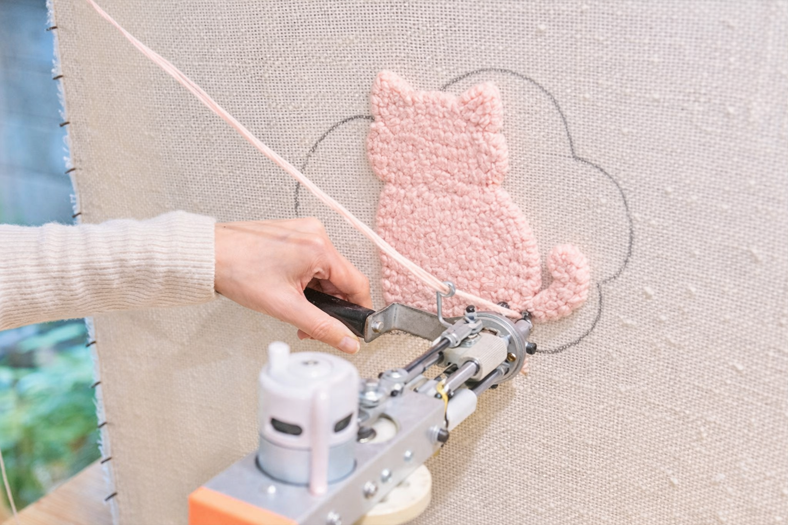
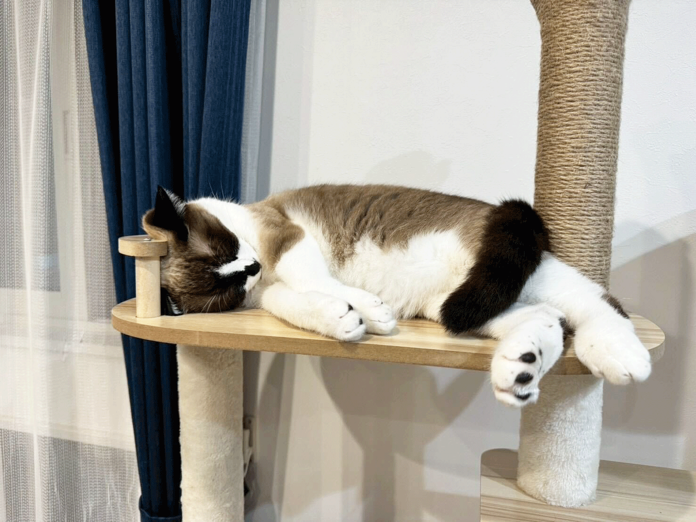

タフティングの体験教室を開催します

当カフェでは、タフティングが初めての方でもお気軽にご参加いただける体験教室を開催しております。
タフティングとは、「タフティングガン」と呼ばれる専用の道具を使い、布に毛糸を打ち込んで模様を描く、ラグやカーペットなどの製造技法です。絵を描くようにオリジナルの作品が作れるため、近年、新しいアート・クラフトとして海外を中心に、日本でも注目度が上がっている人気のクラフトです。
当教室では、道具の扱い方からデザインの作り方まで、スタッフが丁寧にご案内いたします。 猫のシルエットや肉球など、当カフェならではのデザインサンプルもご用意しており、初心者の方でも無理なく作品づくりをお楽しみいただけます。 完成した作品は、そのままインテリアとして飾れるオリジナルアートとなります。 また、作業の合間には香り豊かなコーヒーをお召し上がりいただけます。

店内でのんびり過ごす猫たちに癒された後は、作る楽しみを味わえる、Yarn Cafeならではの特別なワークショップです。 新しい趣味を見つけたい方、タフティングを気軽に体験してみたい方におすすめの教室です。
日時：6月27日（土）13時から16時まで
場所：カフェ内タフティングスペース
定員に達した場合、お断りさせていただくこともございますので、お早めにお申し込みください。皆様のご参加を心よりお待ちしております。